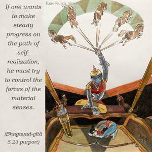

Before giving up this present body, if one is able to tolerate the urges of the material senses and check the force of desire and anger, he is well situated and is happy in this world.

If one wants to make steady progress on the path of self-realization, he must try to control the forces of the material senses. There are the forces of talk, forces of anger, forces of mind, forces of the stomach, forces of the genitals, and forces of the tongue. One who is able to control the forces of all these different senses, and the mind, is called gosvāmī, or svāmī. Such gosvāmīs live strictly controlled lives and forgo altogether the forces of the senses. Material desires, when unsatiated, generate anger, and thus the mind, eyes and chest become agitated. Therefore, one must practice to control them before one gives up this material body. One who can do this is understood to be self-realized and is thus happy in the state of self-realization. It is the duty of the transcendentalist to try strenuously to control desire and anger.